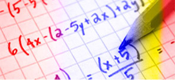

Tips de Estudio
Estudiar rápido facil y bien
- Si te cuesta concentrarte al estudiar, evita Distracciones externas: ruido, música, voces, movimiento, el teléfono móvil...
- Dormir bien, lo primero que debemos tener en cuenta para el buen funcionamiento de las capacidades cognitivas es el descanso. Para poder ponerte a estudiar y rendir correctamente, debes haber dormido bien. Nos referimos tanto a tiempo de sueño como a calidad del mismo. Se recomienda dormir 8 horas.
- Seguir una rutina relajante antes de ir a la cama: cenar pronto, dejar las pantallas..
- También es importante seguir una alimentación saludable y variada para estar sanos y que el funcionamiento del cerebro sea el óptimo. Para ello, debemos aportar al organismo todos los nutrientes necesarios y la menor cantidad posible de alimentos insanos. Afecta, especialmente, al sistema nervioso y a las capacidades cognitivas el azúcar, entre cuyos efectos encontramos irritabilidad, nerviosismo, desconcentración y cambios de humor. Por ello, el consumo de azúcar puede ser uno de los motivos por los que a menudo dices "no puedo concentrarme para estudiar".
- La actividad física es fundamental para mantenerse saludable física y psicológicamente
- Buscar un lugar tranquilo, se recomienda que no sea la cama ni el sofá, es decir, que no sean lugares que se asocien con el descanso o el ocio.
- Dedica un tiempo a organizar bien el estudio, sobre todo, plantea tiempos realistas que incluyan descansos.
- Ser realista y aceptar. En ocasiones, la falta de concentración o el mal rendimiento en el estudio viene dado por una mala organización durante el curso y una presión excesiva durante las últimas semanas o días. También es importante para el funcionamiento de la concentración saber ser realista y entender lo que la memoria es capaz de hacer y lo que no. No se pueden hacer milagros, no se pueden memorizar manuales en horas, no se puede estudiar un curso en una tarde. Si este es tu caso, no pasa nada, que la experiencia te sirva para organizarte mejor y empezar a estudiar con antelación la próxima vez.
- Planificar, para conseguir una meta, el primer paso es la planificación. Puedes hacer un horario o un calendario con tus metas de estudio. Debes incluir las tareas a realizar y también los descansos. ¿Por qué planificar puede ayudarte a concentrarte mejor y que tu estudio sea más productivo? Porque cuando tienes un temario muy extenso y no sabes por dónde empezar, pierdes tiempo decidiéndolo. Porque cuando no sabes lo que tienes que hacer, es más fácil que te agobies y acabes por no hacer nada.
- Leer la información. Resumirla.Hacerte preguntas sobre ella. Buscar las respuestas. Explicar el tema a otra persona.
- Hacer esquemas es otra de las mejores técnicas para estudiar mejor. Para favorecer el aprendizaje, una técnica muy útil es el esquema, un método visual para memorizar los conceptos clave y las relaciones entre ellos. A partir de ahí, se añaden otros conceptos y se desarrollan otras ideas importantes que nos permitan entender mejor el tema global. Puedes hacer collage, hacerlo a mano o de forma digital, puedes utilizar imágenes, gráficas, formas..., todo lo que te ayude a conectar y trabajar la información. De esta manera, estamos trabajando la memoria visual. Aquí puedes ver Cómo tener memoria fotográfica.
- Haz una lista de las palabras clave que surjan en el texto.
- Si lo que debes memorizar son objetos, puedes crear una historia entre ellos, cuanto más inverosímil mejor.